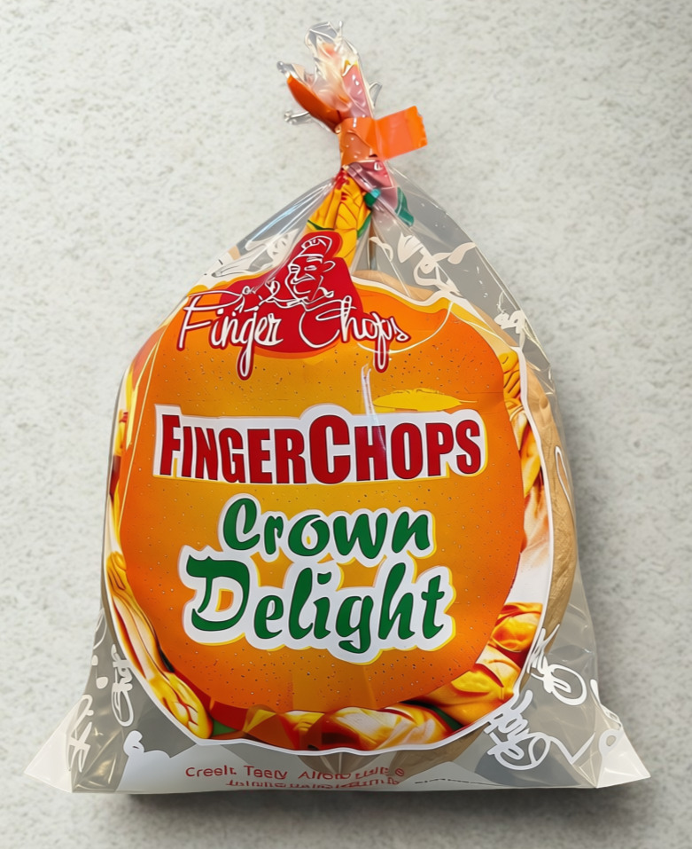
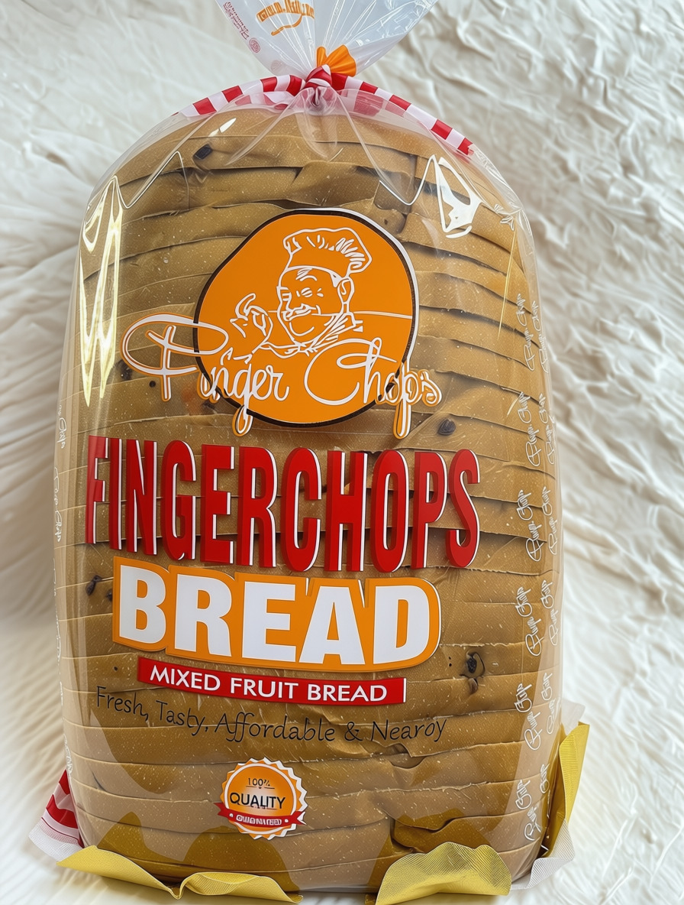
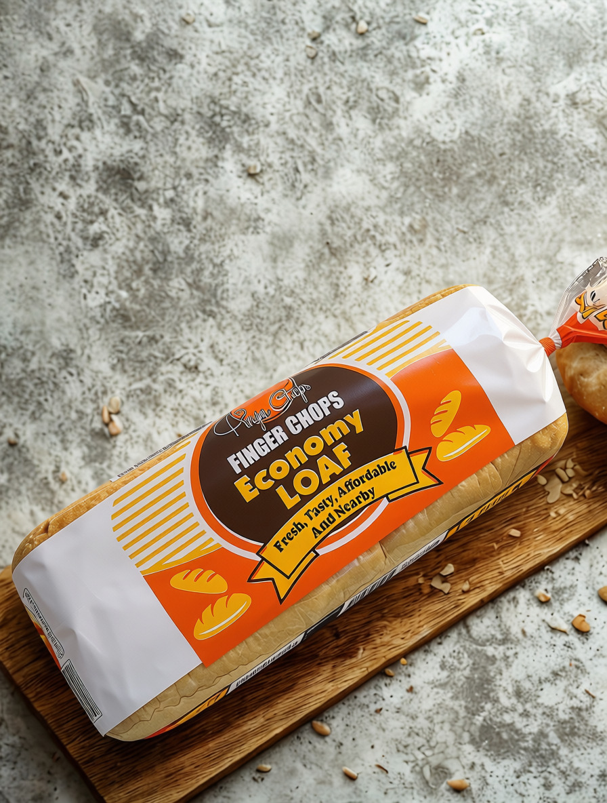
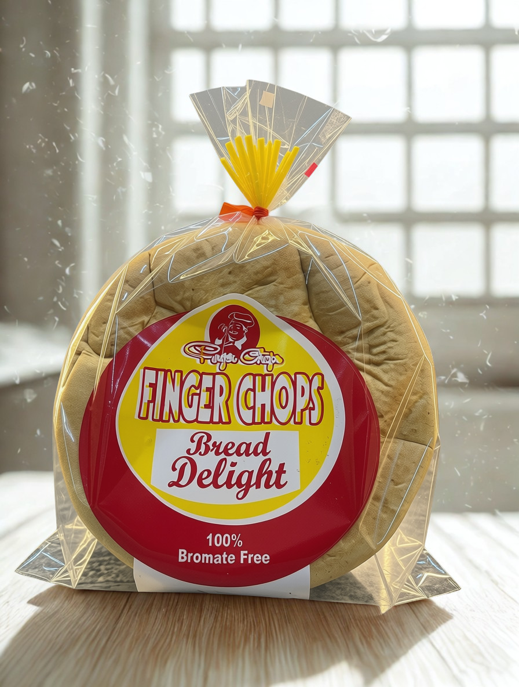
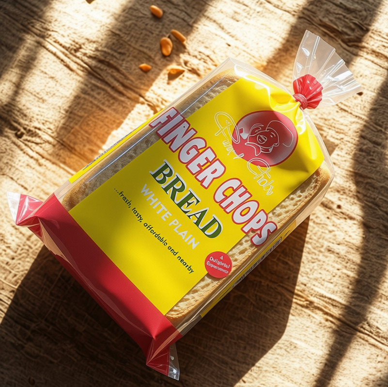
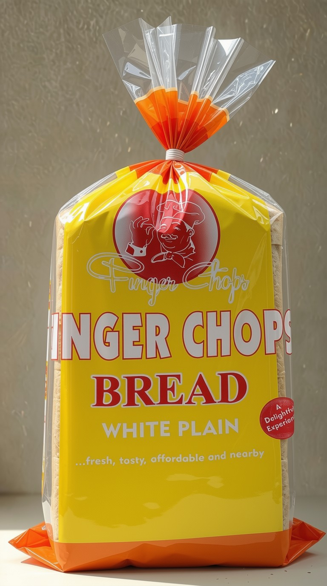

Finger Chops Ventures Limited
"Baking smiles, nourishing communities with every loaf since 2009."
Crafting Tradition & Community
Crafting Tradition, Nourishing Generations Across Nigeria
Founded in 2009, Finger Chops Ventures Limited began with a single wood-fired oven and a simple yet deeply personal promise: to bake honest, wholesome, and delicious bread that every Nigerian family can trust and savor. What began as a modest bakery in Warri, Delta State has blossomed into one of southern Nigeria's most celebrated artisanal baking institutions.
Every loaf we bake is the result of years of passionate experimentation, using only high-protein flour, pure water, natural yeasts, and carefully sourced ingredients with zero artificial preservatives or harmful additives. Our master bakers rise before dawn, ensuring that by the time morning arrives, golden, aromatic loaves of bread are already journeying to homes, schools, hotels, and retail partners across Delta, Edo, Ondo, Anambra, Bayelsa, Rivers, and Lagos States.
We believe great bread is more than just nourishment; it is the cornerstone of shared meals, family celebrations, and everyday comfort. Our facility pairs strict modern hygiene standards with time-honored artisanal fermentation techniques, giving our loaves their celebrated golden crust, pillowy soft crumb, and unmistakable buttery aroma.

Excellence
A Decade of Heartfelt Growth
Humble Beginnings in Warri
Started with a single traditional oven and a dream to serve our local neighborhood with honest, preservative-free bread.
Modern Bakery Upgrade & NAFDAC
Commissioned our expanded modern bakery facility with state-of-the-art spiral kneaders and secured full regulatory approvals.
Expanding Across 7 States
Introduced our signature Crown Delight and Mixed Fruit loaves, establishing regional delivery fleets across southern Nigeria.
Artisanal Mastery & 24/7 Supply
Serving hundreds of distribution centers around the clock, powering thousands of homes with fresh, hot bread daily.
The Secret in the Flour
"We never cut corners on fermentation time." Every batch of dough is kneaded with precision and given ample time to rest and naturally develop its silky texture and deep flavor.
Our founder believed that the real soul of bread lies in patience. In a fast-paced world where commercial bakeries rely on chemical dough accelerators and artificial softeners, Finger Chops remains fiercely committed to natural fermentation.
We source premium whole wheat, fortified grains, and dairy from certified suppliers. Our water is triple-filtered to ensure zero chlorine taste, letting the natural sweetness of wheat take center stage.
Experience Our Bakery Tour
Take an inside look at how our master bakers craft perfection daily under pristine hygienic conditions.
Baked Fresh Every Single Day
From our rich buttery Crown Delight to fruit-studded breakfast loaves, explore our artisanal range.

Crown Delight
Our flagship royal loaf. Incredibly soft, enriched with whole milk and pure butter, baked to golden perfection.

Mixed Fruit Loaf
Generously studded with sweet raisins, glazed fruits, and aromatic cinnamon. The breakfast favorite of champions.

Economy Loaf
Affordable, deeply satisfying, and dense with wholesome energy for students, workers, and growing families.

Delight Loaf
Silky crumb with balanced subtle sweetness, perfect for savory egg toasts or morning tea dipping.

Mini Loaf
Individually portioned snack loaves, packed with nutrients for children's school lunchboxes and quick lunches on the go.

Family Sized Loaves
Generous family sizes designed for sharing. Stays naturally fresh and moist for days without chemical preservatives.
The Finger Chops Standard
Selected Ingredients
We source premium unbleached flour, fortified with essential vitamins and zero chemical bleaches.
Slow Fermentation
Time is our secret ingredient. Dough rests and proofs slowly to unlock rich flavors and fluffy texture.
Stone Hearth Baking
Precise temperature zones yield a golden caramel crust with a moist, melt-in-your-mouth interior.
Fresh Daily Delivery
Dispatched at 4:00 AM daily across 7 states, arriving warm and fresh at your neighborhood store.
The Passionate Team Behind Every Loaf
Decades of combined culinary expertise, quality dedication, and community leadership.


Nourishing Communities Beyond the Bakery
We believe success is measured by the lives we uplift. Explore our community giving programs.
Community Bread Share
Every single morning, Finger Chops distributes hundreds of freshly baked loaves to local orphanages, low-income homes, and vulnerable families across Warri and surrounding communities.
Bakers' Apprenticeship Academy
Our free vocational training program empowers energetic Nigerian youths with professional baking skills, food hygiene mastery, and small-business mentorship to foster self-reliance.
School Nutrition Support
Partnering with primary schools to provide fortified, whole-grain snack loaves to underprivileged pupils, ensuring children have steady energy to learn, grow, and thrive.
Loved by Families Everywhere
"Finger Chops Crown Delight is the only bread my kids will eat for breakfast. It stays soft for days without getting dry or stale. Best bakery in Delta State hands down!"
"As a supermarket owner in Benin City, Finger Chops bread is our fastest moving product. Deliveries are always punctual at 6:00 AM, warm and fresh. Their reliability is unmatched."
"The Mixed Fruit Loaf is pure joy. You can taste genuine butter and high quality flour in every bite. It brings back memories of authentic, hearty bakeries."
Got Questions?
We rely on patient natural fermentation, whole milk, pure butter, and unbleached high-protein flour with zero artificial preservatives or harmful dough accelerators.
Thanks to our slow kneading and high-moisture retention technique, our loaves stay naturally soft and moist for 4 to 6 days at room temperature when kept sealed.
Yes! Finger Chops Ventures Limited holds full NAFDAC and Standards Organisation of Nigeria (SON) certifications, adhering to rigorous laboratory standards.
Our bread is available across major supermarkets, grocery stores, and authorized neighborhood depots throughout Delta, Edo, Ondo, Anambra, Bayelsa, Rivers, and Lagos.
Yes, we supply corporate events, boarding schools, hotels, and regional distributors. Call our direct hotline or email info@fingerchopsng.com for wholesale rates.
Our Hubs & Locations
Experience the Freshness of Finger Chops Today
Interested in becoming a distributor, placing a bulk celebration order, or stocking your store?